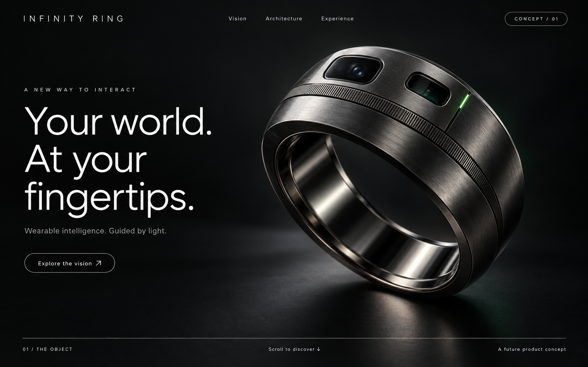
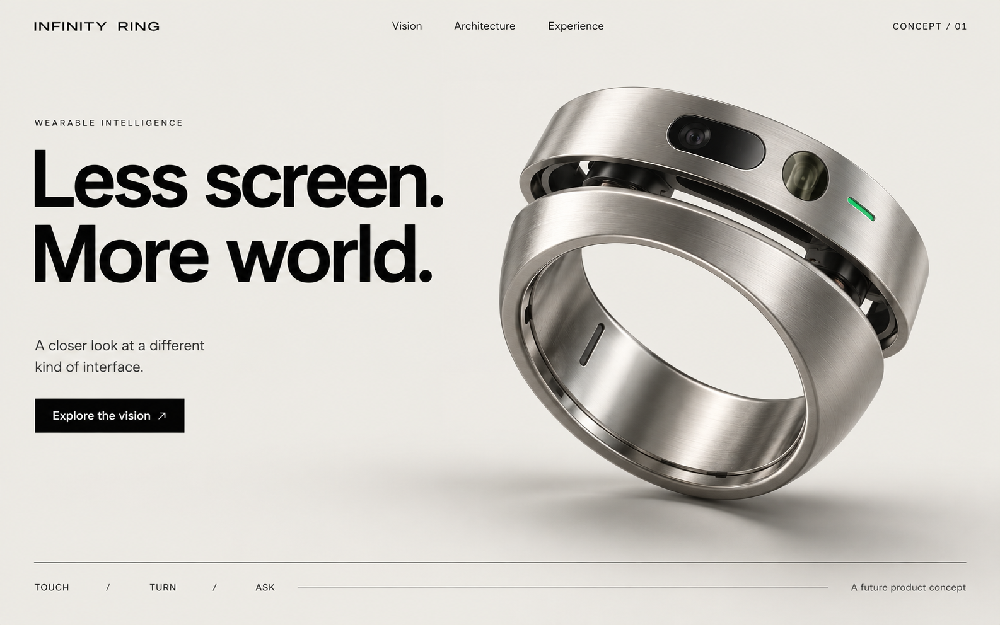
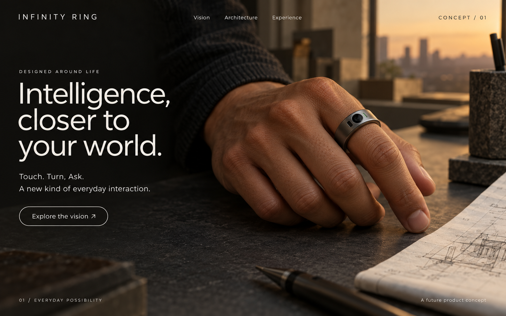

A · 推荐主方向
Precision Noir / 黑色精密产品馆
让产品轮廓、材质与拆解成为主角。

产品亮相、分件探索、连续合体，再进入现实中的目标选择。以下三张是视觉方向稿；下方是独立的三维运动研究。
让产品轮廓、材质与拆解成为主角。

浅色、拉丝银与结构标注，强调设计逻辑。

佩戴感与自然光，可作为 A 的后半段场景语言。

以上为 AI 生成的概念视觉稿，不是实物摄影。三稿用于比较设计方向，具体轮廓尚未定稿。
缓慢向下滚动；在任何位置停下或反向。也可以拖动进度或播放短预览。
本样片使用功能分件几何，验证运动关系。尚不是最终材质、制造结构或完整网站；产品到手部的摄影衔接将在选定轮廓后制作。
一次触摸，打开一种新的交互可能。先认识完整的戒指，再走进它的内部。
正在准备三维视图…
产品尺寸、续航、强日光投影和装配可行性均未获验证，网站不把它们表达为已经实现的能力。